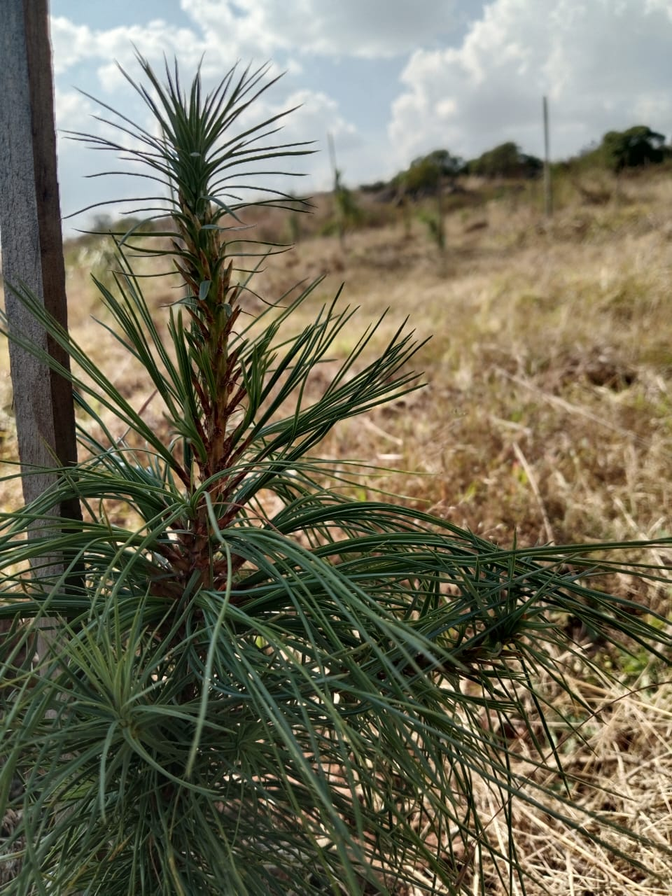
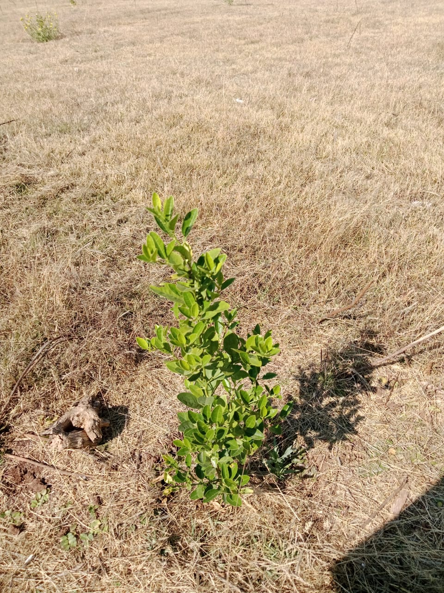
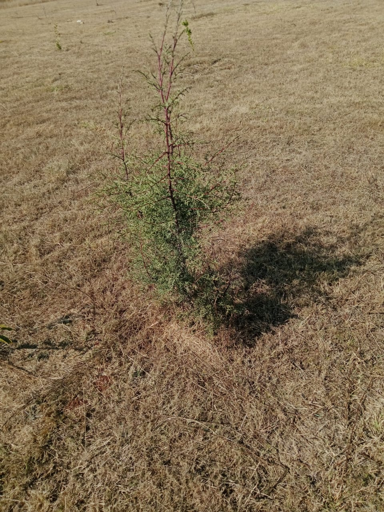

Especies del Bosque Escuela

Manzano (Malus domestica)
Árbol frutal con flores blancas o rosadas, ideal para zonas templadas.

Cedro (Cedrus atlantica)
Árbol ornamental de porte alto y follaje verde azulado.

Ciruelo (Prunus domestica)
Produce pequeñas ciruelas y posee bellas flores blancas.

Durazno (Prunus persica)
Árbol frutal de flor rosada que produce duraznos dulces.

Limonero (Citrus limon)
Árbol aromático con fruto ácido y flores fragantes.

Pino (Pinus montezumae)
Conífera de gran tamaño, esencial para el hábitat local.